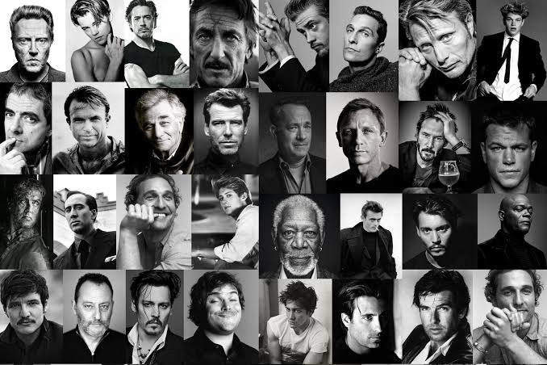

The Portfolio Career
Do your mix of interesting things. What a portfolio career is for, what it actually looks like week to week, and where it can go wrong — or unexpectedly right.
By Qava Team

Do Your Mix of Interesting Things
The easiest way into this idea is to pin down what we actually mean by a portfolio career, and I find it helps to hold three things in view at once: what a portfolio career is for — its objectives; what it actually looks like week to week — the routine; and where it can go wrong or unexpectedly right — the risks and opportunities. Get those three straight and the rest of the conversation has somewhere solid to stand.
The First Objective: Do Interesting Things
The first objective is the simplest to state and the most seductive: to do a mix of interesting things. For some people, the interesting thing is singular — one company, one market, one product, and the deep satisfaction of being the very best at it. That's a legitimate path and I won't pretend otherwise. But for a growing number of professionals, "interesting" means variety, and it means a lot of it.
Until recently, doing many things at once was a privilege reserved for people with decades behind them. Picture the seasoned C-suite executive who, on top of being CFO, sits on four boards and advises a non-profit on the side. What an enviable work-week that is — constant exposure to different ideas, people, products, technologies, and markets, the whole brain firing at once, the freedom to lean into the areas that need attention and ease off the ones that don't. The first objective of a portfolio career is to reach that vantage point much sooner than the traditional timeline allows. Instead of waiting to become a grizzled executive before you're allowed to work on a variety of things, you go find the niches where you can add value now, and you provide those services in parallel.
And from the professionals I've spoken to, the benefits don't only accrue to the individual — each company in the portfolio gains something too. There's a network effect, where people and opportunities get connected more seamlessly because you're standing at the intersection of several worlds. There's the cross-pollination of ideas and experiences that produces better outcomes faster. And there's a genuine, hard-to-fake excitement that comes from carrying a healthy mix of projects rather than one monolithic job. That combination is something a portfolio career is almost uniquely positioned to create.
The Second Objective: Take Big Swings
The second objective is more strategic, and it's really about risk. It's about exposing yourself to big swings while defusing the danger that normally comes with them. Plenty of us have done the classic version — joined a startup, taken a pay cut for equity, and watched that equity quietly resolve to zero. It isn't fun. A minority have gone the other way and seen enormous gains from the same move, but that's the point: it's a minority, because it takes something close to a miracle for a startup to succeed and for you to have joined at the right moment to benefit in a meaningful way. Everything from product to management to funding to demand to competitors has to line up almost perfectly for your slice of ownership to be worth anything at all.
A portfolio career reshapes that bet. Instead of pouring yourself into a single company and praying, you hold advisory relationships across a range of high-growth companies, trading your skills and experience for a small amount of ownership or a right of first refusal when a role opens up. That structure gives you real access to the upside if one of them succeeds — and, just as importantly, a front-row seat from which to assess how likely that success actually is while you're advising them.
You're not guessing from the outside. You're reading the odds from within.
The Third Objective: Mitigate Job Insecurity
The third objective is defensive, and recent history makes the case better than I can. Layoffs have spiked, and not gently — in March and April of 2020 there were more than 22 million layoffs in the US alone. Those stories move through the news like wildfire and stir up real anxiety about the health of the economy and the country. I'd love to believe they're rare aberrations, but the numbers say otherwise: roughly 1.5 million layoffs happen every month in the US, and over 200,000 people file unemployment claims every week.
If you've been through one, you know it's brutal for most people. Finding work again can be slow and humbling, and you may be forced into a pay cut, hit with significant insurance costs, and more, all at once. A portfolio career is designed to soften that blow by giving you other income streams — so that when a layoff lands, you aren't stranded and burning through savings just to keep the lights on.
It's hard to argue with any of these three objectives, honestly. Most people are drawn to the same trio: working on a variety of interesting things, taking big swings, and cushioning themselves against the shock of losing a job.
So What Is a Portfolio Career, Exactly?
Here's the definition I use. A portfolio career is a series of different but interrelated marketable products or services that generate income independently, create synergies where the total is greater than the sum of its parts, and can be balanced in a way that does not compromise the success of any of your clients. That last clause matters enormously, so I want to underline it: a portfolio career is not a licence to neglect people. It's the opposite.
The whole thing collapses the moment your clients start getting shortchanged.
When people hear "multiple income streams," their minds jump straight to real estate — and sure, rent is an income stream, but for most of us it isn't a career. What I'm describing is career variety. Think of someone who provides hands-on consulting, advises companies on strategy, sells online digital courses, and runs a profitable podcast. Or someone who runs a boutique agency, hosts events and conferences, and publishes a profitable newsletter. Any one of those could stand alone as a career. Stitched together, they become a portfolio whose parts feed one another, generating opportunities and synergies that none of them would have produced in isolation.
What the Week Actually Looks Like
If you're starting to suspect this life might suit you, it's worth being honest about the routine before you leap, because it's more disciplined than the freedom of it suggests. Most of what builds a portfolio career comes down to learning skills, gathering experiences, and productising them — which means skill-building and product-building have to sit at the centre of your capabilities, not the edges.
A typical week gets organised around the needs of your most significant project or largest client, then the next most significant, and so on down the line. Continuous, honest prioritisation is non-negotiable. On Monday morning, before anything else begins, you plan every hour of the week — and with a portfolio, that planning genuinely takes time. You name the specific outcomes you're chasing and when you intend to hit them. You think hard about each client's priorities and what you can do to move them forward: helping them see around corners, handing them ideas and breadcrumbs, aiming to finish each week having exceeded their expectations in both the quality and the quantity of your work. The whole posture is to plan how you'll add outsized value, every single week.
From there you set your meeting cadence, locking in regular check-ins and making sure they don't collide with each other — which is harder than it sounds once you've got several going. Setting expectations early around timeliness and ways of working is what builds momentum fast and keeps it. Then you run the week itself, concentrating on high-value tasks and outcomes, timeboxing your focus and energy, and updating stakeholders on progress and escalations as you go. And you invest in your support team — making sure they feel heard and encouraging them to find and implement their own efficiencies. That team might include someone who builds slides, financial models, or pitch decks, plus an attorney and a business advisor. Ideally they're spread across time zones, so that while you sleep, someone somewhere is already moving something forward that you'll need when you wake.
The Risks Worth Naming
For all its appeal, this path isn't for everyone, and I'd rather be straight about why. The work can get genuinely relentless. Your mindset has to be that you simply won't let anyone down, and while you try to spread deliverables sensibly over time, sometimes that isn't possible and you just have to dig deep and get it done. That's true of most careers, but it's guaranteed in this one — so if you don't handle pressure well, this isn't the path for you.
There's also the perception problem. Existing employers may read your portfolio career as disloyal or distracting. Sometimes there's truth in that, and it's a cue to reassess your choices honestly, especially if multi-tasking isn't yet a strength. Other times it's simply an employer with a traditional view of work, where face time and die-hard loyalty are the only acceptable signals. The move there is to choose clients who support how you work, and to be transparent with them from the start.
Two more worth naming plainly. You may spread yourself thin and erode skills you once held deeply, drifting toward being a generalist — so ask yourself honestly whether that's a real risk for you. And you may pour time and energy into opportunities that ultimately collapse into nothing. Each of these risks is real. Each also has mitigation strategies that genuinely work — but those are a conversation for another time.
Build your mix of interesting things.
Find the projects, clients, and people who make a portfolio career possible.
Start with Qava.